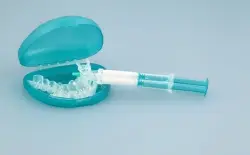
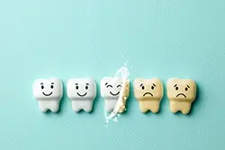

A lighter, brighter smile is on the wish list for many of our Texarkana dental patients, but some of them are still “taking the tissue test” and trying out every DIY teeth whitening hack on the internet. Step away from that mashed strawberry and charcoal concoction and schedule your cosmetic dentistry consultation at Pleasant Grove Family Dentistry. We offer a wide range of cosmetic solutions that are customized to our patients’ individual needs to deliver picture-perfect smiles within your schedule and budget. Professional teeth whitening is by far our most popular cosmetic treatment option, and unlike all those other products you’ve been disappointed with, our professional whitening services predictably deliver smiles eight to ten shades brighter. When you’re ready to get started, call our dental office in Texarkana. We can’t wait to hear from you.
Causes of Dental Discoloration
Before we get started with a teeth whitening treatment, we need to understand what caused your dental discoloration. This is important because the underlying cause of your tooth staining will determine which treatment is appropriate to brighten your smile. Some common causes of dental discoloration include:
- Eating and drinking darkly-colored foods
- Smoking and tobacco usage
- Poor oral hygiene
- Enamel wear that reveals the dentin layer of teeth
In-Office Teeth Whitening with Zoom!

If you want to see dramatically whiter teeth almost immediately, in-office Zoom! teeth whitening is likely your best option. The Zoom! process is relatively straightforward. We begin by isolating teeth, using shields to protect lips and gum tissue. Then, we apply a layer of whitening gel. Finally, the Zoom! whitening light is positioned over your smile accelerating the process. After twenty minutes, we’ll check your results and reapply as necessary. Most patients see their desired teeth whitening results after two to four applications.Take-Home Teeth Whitening
If you want to whiten your smile more gradually or you have very sensitive teeth, an at-home teeth whitening kit may be preferable. Our at-home whitening kits provide predictable results by using customized application trays and professional-grade whitening gel. This ensures your whitening gel stays on teeth and active for about 30 minutes at a time, lifting away stains. In the first few days of treatment, you’ll start to see some improvement, and most people achieve their desired result after 10 to 14 days.
Maintaining Your Results
Once you have your brighter smile, we know you’ll want to make it last. Below, we’ve included some tips to help you maintain the results of your teeth whitening treatments:
- Everything in moderation – we all love our coffee, berries, and red wine, but these darkly-pigmented foods will definitely stain your teeth. Limit consumption of these staining foods and beverages.
- Kick bad habits – if you smoke or use other tobacco products, your teeth will darken and become discolored very quickly. Improve your health and maintain your teeth whitening results by taking steps to stop tobacco usage.
- Maintain good habits – in addition to getting rid of or limiting some less-than-stellar habits, you can also maintain your results by improving your oral hygiene routine. We can walk you through the best oral hygiene products and techniques during your six month dental exams and teeth cleanings.
- Take a whitening weekend – starting to see discoloration after several months or a year? Let us know. We’ll provide an at-home whitening kit (or refill if you whitened at home) for you to touchup your results with a few daily applications.
The Transformation
In two to three visits, your smile can be completely changed. During your first visit, one of our skilled dentists will discuss goals for your smile then determine the size, shape, and type of veneer that’s right for you. A second visit may be required to prepare your teeth, including gently buffing away a small amount of enamel, reshaping teeth if needed, and placing temporary veneers. In some cases, veneers can be placed without grinding away any of your natural tooth. Finally, your custom-made porcelain veneers will be permanently bonded to your teeth, and you will walk out of our Texarkana, TX office with a bright, perfect grin.
From regular preventive care to elective cosmetic dentistry, a beautiful smile is just a call away. With a history of excellence serving patients from Texarkana and surrounding areas, our dentists invite you to make an appointment and discover your smile’s full potential. Call our Texarkana dental office today to schedule your personal consultation.
Understanding the Cost of Teeth Whitening
If you’re interested in whitening your teeth, you’re probably wondering how much you can expect to pay for this incredible treatment. However, because there are a variety of factors that can influence the cost of teeth whitening in Texarkana, there is no way to charge a ‘one-size-fits-all’ rate. The best way to get the most accurate total for this treatment is to visit Pleasant Grove Family Dentistry for a consultation. In the meantime, please feel free to read more about how we calculate the price for teeth whitening by clicking the button below.
Read more
Factors that Affect the Cost of Teeth Whitening
Although teeth whitening is typically one set price, there are several factors that can affect how many treatments you’ll need until you reach your desired results, including:
- How severe your stains and discoloration are.
- The types of discoloration present (such as age-related or caused by diet or medication) and whether the stains are extrinsic (located on the enamel’s surface) or intrinsic (located within the tooth).
- Whether you’ll need any other procedures first, such as dental crowns or fillings.
Types of Teeth Whitening: What Do They Cost?
Inexpensive Teeth Whitening Vs. Professional Teeth Whitening
If you’re only considering the numbers above, you may be curious about why professional whitening from your dentist is so popular when it’s the more expensive option. However, it’s important to remember that when it comes to cosmetic dentistry, you truly do get what you pay for.
When you invest in cheaper strips or gels, it’s not uncommon to see little to no results, especially when you have more severe stains and discoloration. It can also take months to achieve the results you desire if you do get them.
Professional whitening from your dentist is designed to remove up to eight shades of discoloration in as little as an hour for in-office care or two weeks for take-home kits, although most patients see noticeable changes in their appearance right away.
Ultimately, it is important to remember that when choosing the right teeth whitening option, you should consider what kinds of results you’re hoping for and how fast you’d like them, not just the price.
Options For Making Teeth Whitening Affordable
Because teeth whitening is considered an elective cosmetic procedure, it is rarely covered by dental insurance. However, at Pleasant Grove Family Dentistry, we’re proud to welcome payment plans from our preferred third-party lender, CareCredit. These plans allow you to break up the cost of your treatments into multiple, low-to-no interest monthly payments that may be better suited to your budget. You can learn more about them on our website, or don’t hesitate to call us for assistance.
At Pleasant Grove Family Dentistry, we’re ready to help you get a whiter, brighter smile with professional teeth whitening. To learn more about this treatment including its cost, schedule a consultation with us today.
Teeth Whitening FAQs

If you’re looking to enhance the natural beauty of your smile, teeth whitening could be the perfect solution for you. However, it pays to be well-informed about the procedure, so we’re here to help! Here are the answers to some of the most common questions we receive about teeth whitening in Texarkana. If you don’t see the information that you’re looking for below, don’t worry. Give us a call and we’d be happy to walk you through the procedure and get you started with a consultation.
Read more
Does Teeth Whitening Hurt?
Many patients worry about their treatment because they fear that it will be painful. Because professional teeth whitening treatments are entirely customized, you are much less likely to experience tooth sensitivity. If your teeth are more prone to being sensitive, don’t hesitate to let your dental team know. By spacing out treatments, avoiding hot beverages, and using a specialty toothpaste, you can avoid this unpleasant sensation.
Am I a Candidate for Teeth Whitening?
If you are struggling to smile confidently due to having stubborn stains and pigmented discoloration, you may be a candidate for teeth whitening. The best way to find out if it’s right for you is by scheduling a consultation. This appointment will allow our team to conduct a thorough examination and learn more about your smile goals. If your teeth and gums are healthy, we can begin working on your custom treatment plan. If there are any untreated dental concerns, you will need to have them treated before moving forward in the whitening process.
Is Teeth Whitening Permanent?
No, teeth whitening is not a permanent treatment. Typically, results will last anywhere from a couple of months to a few years depending on how well you care for them. To prolong your results, implement a solid at home oral hygiene routine, attend your six-month dental cleaning and checkups, and avoid poor dental habits, like using tobacco products. Touch-up treatments are also available to help you maintain your bright smile!
Does Teeth Whitening Damage Enamel?
Teeth whitening gel doesn’t damage healthy enamel. However, if your teeth are compromised by decay or gum disease, the chemicals can cause issues. That’s why it’s so important that we conduct a thorough dental exam beforehand. Additional damage can occur from at-home remedies that do more harm than good, like using activated charcoal and hydrogen peroxide to address discoloration. Overuse of whitening products can also wear away enamel. If you want to whiten your teeth in any way, you should always consult with your dentist first.